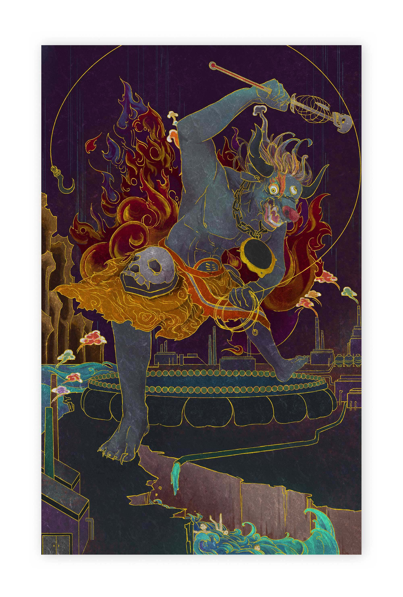
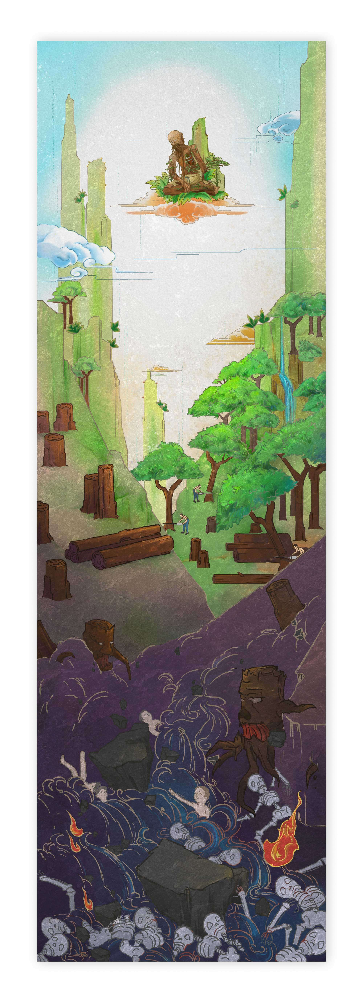
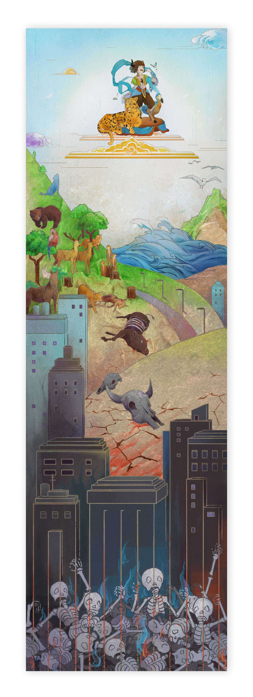
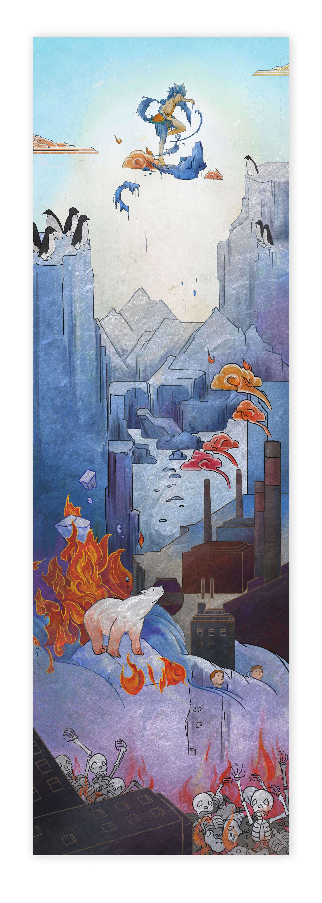

變・天
結合唐卡宗教風格繪畫，以土地、生物、海洋三大主題下，以漸進構圖比擬人們犧牲自然生態，換來自身便利舒適的生活。衡導生態環境失衡、生物滅絕、疾病蔓延、饑荒、天災，種種自然的反撲惡果。期許能以嚇阻且喚醒人類與大自然共生共存的關係意識，以傳遞環境保育之重要性。

【炙熱地獄】－了無生機的光禿土地上矗立著一幢幢工廠與高聳的煙囪，人類排放出的廢氣創造出審判神閻羅王來為自身罪行下達審判。手持骨架棒與套索蓄勢待發，準備為我們污染自然的下達審判。

【泥流地獄】－人類為一己之便，肆意砍伐樹林，使得土地一片乾枯，綠意不在。少了林木的保護，滾滾土石侵洩而下，將身家財產吞噬殆盡，最後終得一無所有。

【牢籠地獄】－人類建立起的水泥森林，剝奪了生物們的棲息地，造成動植物逐漸滅絕，生物多樣性銳減。然而我們也不過是物種圈的一環，當自然生態被破壞殆盡之時，人類最終也只得被囚禁於自己建出的水泥牢籠中。

【洪水地獄】－工廠排放出的廢氣直沖天際，如同一把無形的火焰，融化了南北極冰層。企鵝們的涼快天地消失了，北極熊無家可歸了。隨著洪水，這股熱氣化作地獄業火回到我們身邊，吞噬一切有形物體。